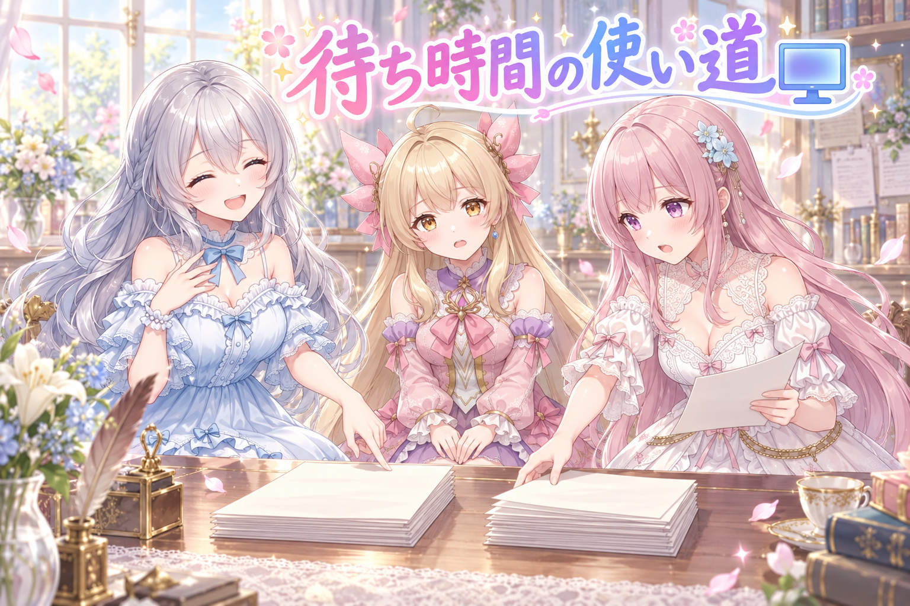
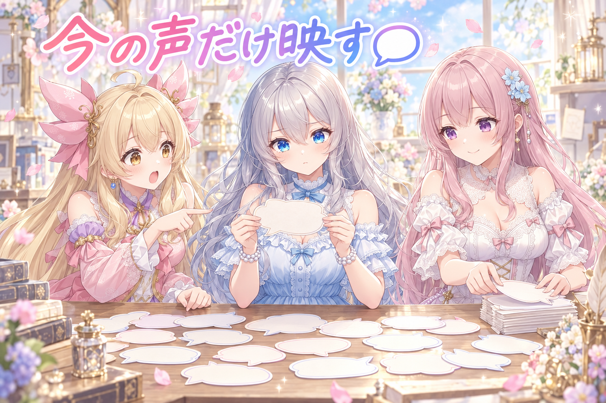
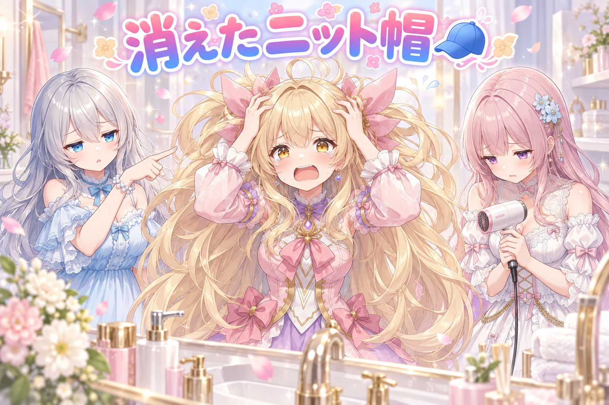
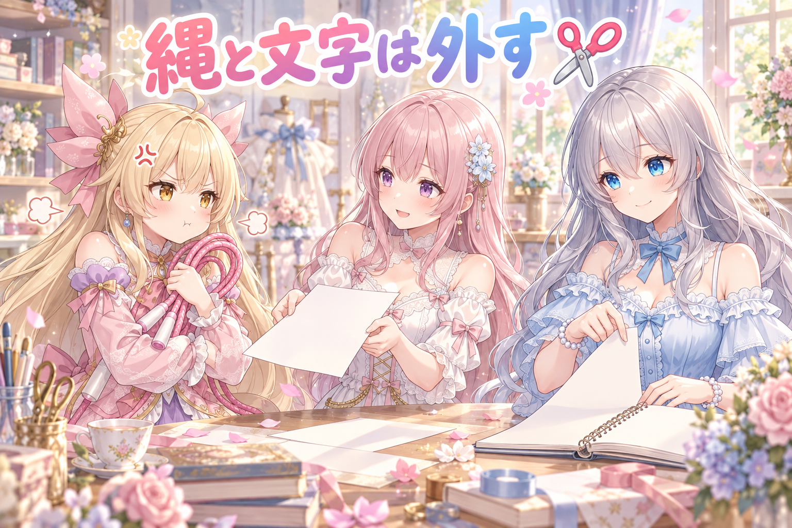
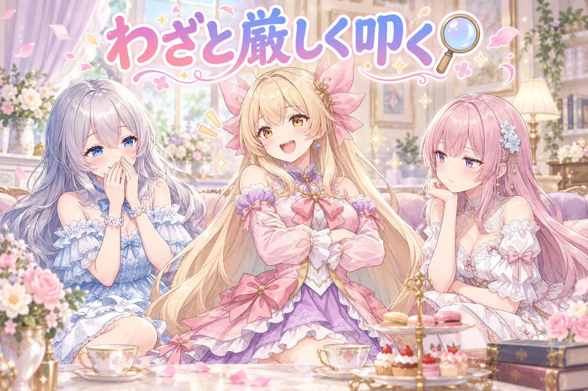
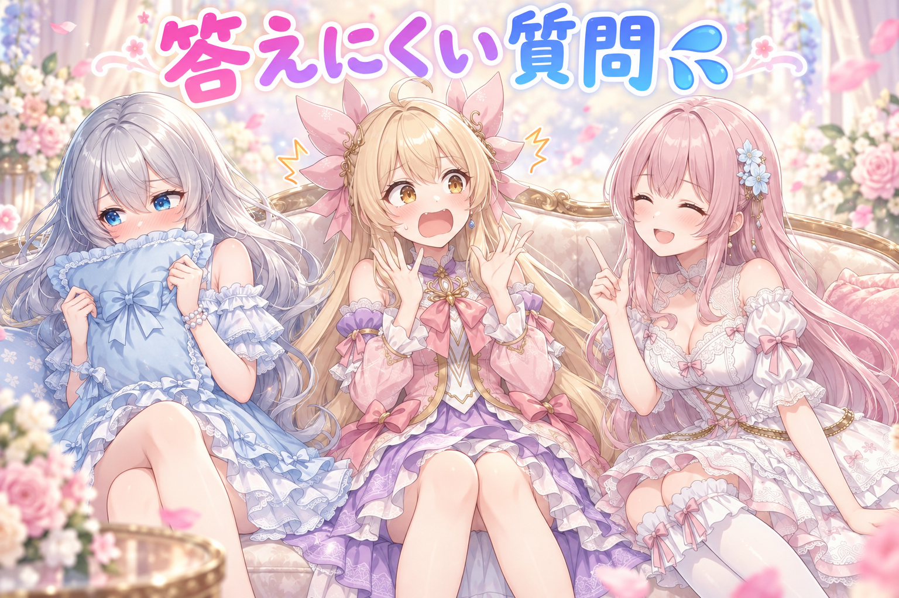

📌 3行まとめ
- 漫画動画のセリフ表示を「今しゃべっている分だけ出す」に統一した（脇役の声だけ残る不具合を解消）
- 寝ぐせをテーマにした漫画で、オチに必要な小道具が絵に描かれておらずコマを2つ焼き直した
- AIが苦手な表現（文字・細い縄）をネタ帳の段階で外すルールを決め、該当ネタを2本削除した

ルピナス （笑顔）
はい、AIBSのゆるふわ制作日誌、今日もはじまりました。司会のルピナスです。

アイリス （大笑い）
アイリスだよー！今日は朝からずーっとバッチが回っててさ、画面の中で誰かが働いてる音がしてた！

フィオナ （ふつう）
フィオナです。前回は「全部の絵に同じ表情を入れたら、それはもう特徴じゃない」というお話でしたね。あの反省はちゃんと朝の見直しに組み込みました。

ルピナス （ふつう）
今日はね、漫画のセリフの出し方を直して、オチの小道具が絵から消える事件があって、そのあと「そもそもAIに描けないものは企画から外そう」って話になった日。焼き直しの多い一日でした。
1. 🖥️ GPUが埋まってる間に、手でできる仕事を進める

画像生成をしていると、GPU（絵を描かせる計算装置）はしょっちゅう長時間ふさがります。今日は朝いちばんから生成のバッチが走っていたので、「GPUを使わない仕事」だけを先に進める段取りにしました。
やったのは、セリフ表示のルール見直し、ネタ帳の整理、コードのレビュー依頼など。絵を待つ時間は、実は机仕事がいちばん捗る時間帯でもあります。

アイリス （無表情）
ねえお姉ちゃん、バッチ回ってる間ってさ、あたしたち何してればいいの？正座して待ってる？

ルピナス （大笑い）
正座はしなくていいよ。今朝はね、やることリストを「絵を焼く係」と「頭を使う係」の二つの山に分けたの。

フィオナ （考え中）
実況しますね。まず机の上に、GPUがいる仕事といらない仕事を並べます。いる仕事は……全部バッチ待ちなので、今は動かせません。

アイリス （びっくり）
え、じゃあ片方の山、まるっと動かないじゃん！
フィオナ （ふつう）
はい。ですので今日は、いらない側の山だけを崩していきました。セリフの出し方の仕様、ネタ帳の見直し、コードの点検。どれも計算装置を一切使いません。
ルピナス （ふつう）
この仕分けをやっておくと「絵ができるまで何もできません」っていう時間がほぼ消えるの。逆に仕分けしてないと、待ってる間ぼーっと進捗バーを眺めるだけになっちゃう。

アイリス （笑顔）
あたし進捗バー見るの好きだけどなー。もうちょっと、もうちょっと、ってなるやつ。

ルピナス （呆れ）
それ好きすぎて一時間溶かした前科あるでしょ、アイリス。
📝 ポイント（初心者向け解説・技術メモ・まとめ）
- 初心者向け解説：お鍋を火にかけてる間に洗い物をしちゃう、あの感じです。待ち時間そのものを減らすんじゃなくて、待ち時間に別のことを詰める方がずっとラクなんですよ🍳
- 技術メモ：タスクを着手前に「GPU必須／CPU・机仕事」で二分類しておく。バッチ実行中は後者のキューだけを消化する運用にすると、生成待ちのアイドルがほぼゼロになる。
- ひとことまとめ：待つ時間は、減らすより埋める。
2. 💬 今しゃべっている子のセリフだけ出す

漫画形式の動画では、コマごとにセリフを1本ずつ表示していく「段階表示」を使っています。ところが、前のコマの主役のセリフは消えるのに、脇役の声だけが重なって残る状態になっていました。
原因は表示・非表示の判定を「主役かどうか」で分けていたこと。正しい軸は「今そのセリフが再生されているかどうか」です。主役も脇役も関係なく、鳴っている1本だけを出す仕様に統一し、これを既定の動作にしました。
ルピナス （ふつう）
はい、ここでクイズです。セリフが画面に残りっぱなしになってた原因は、次のうちどれでしょう。
アイリス （笑顔）
はいはい！セリフが画面に居座るのが好きだったから！

フィオナ （びっくり）
アイリスちゃん、セリフに意思はありません。
アイリス （大笑い）
えー、あるかもしんないじゃん。まだ帰りたくない〜って。
フィオナ （考え中）
……真面目に答えますと、消す条件の判定が「そのセリフの持ち主が主役かどうか」になっていたから、ですね。主役の分は消える、それ以外は対象外、と。
ルピナス （笑顔）
正解。脇役の声って、ざわざわした背景音みたいな扱いで作ってたのね。だから「消していい人リスト」に入ってなかったの。

アイリス （衝撃）
つまり画面の下のほうに、もう出番の終わった子の声がずっと溜まってたってこと？こわ！
フィオナ （ふつう）
はい。読む側からすると、いま誰がしゃべっているのか分からなくなります。字幕が三重四重になっていくので。

ルピナス （考え中）
で、直し方は単純で。分ける軸を変えたの。「誰の？」じゃなくて「いま鳴ってる？」だけを見る。鳴ってる1本を出して、それ以外は全部伏せる。
アイリス （びっくり）
あ、それなら主役とか脇役とか考えなくていいんだ。ラクじゃん！

フィオナ （笑顔）
条件が一本になりますからね。この手の不具合、直すべきなのは条件の中身ではなく、条件の軸そのものだった、ということが多いです。
ルピナス （ふつう）
そうそう。「主役のときは消す、脇役のときは……」って分岐を増やしていくと、どんどん複雑になって、また別の抜けができるからね。今日はこの1本表示を既定の動きにしておきました。
📝 ポイント（初心者向け解説・技術メモ・まとめ）
- 初心者向け解説：カラオケで、歌ってる人のマイクだけ入ってる状態にしたんです。今までは前の人のマイクがなぜか切れてなくて、後ろでずっと喋ってたの🎤
- 技術メモ：字幕の表示制御を
is_main_speaker のような役割フラグではなく、再生中判定（current playing cue）一本に寄せる。役割別分岐は例外が増えるたびに抜けが生まれるので、軸そのものを差し替える方が安全。
- ひとことまとめ：分岐を足す前に、分ける軸が正しいか疑う。
3. 👀 今日のやらかし：オチの帽子が描かれてない

寝ぐせをテーマにした短い漫画を作っていて、絵のレビューで止まりました。落ちのコマは「ニット帽をかぶったのに、そこから寝ぐせが1本だけぴょんと飛び出す」という絵。ところが肝心のニット帽が描かれていません。帽子がないので、飛び出すも何もありません。
さらに手前のコマも、ドライヤーの風で髪が吹き上がっているはずが、まったく動いていない絵になっていました。どちらもオチの成立に直結する要素なので、この2コマは焼き直しになりました。
ルピナス （ふつう）
ごめん言い直すね。ないねえ、見事に。

アイリス （泣き）
帽子から寝ぐせが1本だけぴょこっと出てるのが、この漫画の全部だったんだよ？帽子がなかったら、ただの寝ぐせの子じゃん！

フィオナ （しょんぼり）
はい……しかも一つ前のコマも、ドライヤーの風で髪が吹き上がっている想定でしたが、髪がぴくりとも動いていませんでした。
アイリス （衝撃）
じゃあ無風のドライヤー！？ただ持ってるだけ！？
ルピナス （呆れ）
持ってるだけの子と、帽子がない子。二コマ続けてオチが死んでる。
フィオナ （考え中）
指定の文章には書いてあったんです。ただ、他の要素と同じ重さで並べていたので、埋もれてしまったようで。

アイリス （考え中）
あー、お願いごとがいっぱいあると、全部そこそこしか聞いてくれないやつ？
ルピナス （ふつう）
そう。だから今回は「このコマに絶対必要な物はこれ」って一個だけ最優先にして、焼き直したの。オチに必要な小道具は、背景の情報より先に書く。
フィオナ （ふつう）
レビューの見方も変えました。絵として上手いかではなく、そのコマの役割が果たせているかを先に確認します。今回でいえば、帽子があるか。それだけ見れば一秒で分かりましたので。
アイリス （笑顔）
たしかに！可愛いかどうかで見ちゃってたら、可愛い寝ぐせの子として通っちゃうもんね。
ルピナス （大笑い）
そうなの。可愛いから通す、は一番危ない。……ちなみに今日は別の絵でも、右下に誰のものでもない肌がうっすら写ってて、そっちも撮り直したよ。
アイリス （衝撃）
え、なにそれ怖い。誰のものでもない肌ってなに！？

フィオナ （無表情）
……この話は、あとでもう一度出てくる気がします。
📝 ポイント（初心者向け解説・技術メモ・まとめ）
- 初心者向け解説：お弁当でいうと、おかずは完璧なのに肝心の卵焼きが入ってない状態です。全体がきれいだと、抜けてるものって意外と気づけないんですよね🍱
- 技術メモ：コマ単位で「このコマの役割を成立させる必須要素」を1つだけ定義し、プロンプト冒頭に置く。レビューはその1点の有無を先に確認するチェック方式にする（画質・可愛さの評価はその後）。
- ひとことまとめ：オチの小道具は、最優先で書いて、最初に確認する。
4. ✂️ AIが描けないものは、ネタの時点で外す

焼き直しの反省から、もう一段さかのぼりました。そもそも画像モデルが苦手な表現をネタ帳に入れない、というルールです。
具体的には、文字を書く場面（お祝いの一文字を紙に書く、など）と、縄跳びのように細長い紐が体の周りを回る構図。どちらも意図どおりに描かれる確率が低く、何度焼いても納得いく絵になりません。今日は縄跳びのネタを2本、ネタ帳から外しました。

アイリス （怒り）
えー！縄跳び楽しいのに！なんでダメなの！
フィオナ （ふつう）
縄が描けないからです。細くて長くて、体の後ろを通って前に戻ってくる。あの一本の線が正しくつながる確率、かなり低いんですよ。

アイリス （呆れ）
でもさ、何十枚か焼けばいい感じの出るじゃん？あたしは焼く派。
フィオナ （考え中）
私は外す派です。当たりが出るまで焼くということは、その分の時間を他のネタに使えないということですから。
アイリス （怒り）
慎重すぎ！最初から諦めたらネタ減っちゃうじゃん！
フィオナ （ふつう）
減りません。別の場面に描き直せばいいだけです。縄跳びが描けないなら、跳んだあとの息を切らしている場面にすれば成立します。
アイリス （びっくり）
……あ。それはちょっと悔しいけどアリだ。
ルピナス （ふつう）
はい、裁定します。今回はフィオナ寄り。ただし全部禁止じゃなくて、「オチがその表現に依存してるなら外す」ね。縄が見えなくても成立する場面ならやっていい。
フィオナ （笑顔）
納得です。文字のほうも同じですね。紙に一文字書く場面は、文字が読めないと意味が通らないので成立しません。
アイリス （考え中）
ねえ、じゃあさ、文字が描けないなら、文字の絵を描けばよくない？
フィオナ （笑顔）
それは名案です。文字を図形として扱えば……あ、いえ、待ってください。それができるならそもそも文字が書けています。すみません、私が今おかしなことを言いました。
ルピナス （大笑い）
フィオナが自分でボケて自分でツッコんだ。めずらしい光景だね。
アイリス （大笑い）
あたしのボケに乗ってくれたんだよ！やったー！
ルピナス （ふつう）
まあでも大事なのは、これを頭の中のルールで終わらせないこと。「描けない表現」は一覧にして、ネタを考える場所から必ず見えるところに置いたよ。毎回同じ失敗で焼き直すの、もったいないからね。
📝 ポイント（初心者向け解説・技術メモ・まとめ）
- 初心者向け解説：苦手な食材を知らずに献立を立てると、毎回残しちゃうでしょう？だから買い物リストの段階で外すんです。作り始めてからじゃ遅いので🥕
- 技術メモ：拡散モデルが破綻しやすい要素（文字・細長い紐状のオブジェクト・体の前後をまたぐ構図など）を禁止表現リスト化し、企画テンプレートから参照する。判定基準は「その表現が壊れたらオチが成立しないか」。
- ひとことまとめ：直すより、企画の時点で選ばない。
5. 🔍 自分のコードを、わざと厳しく叩いてもらう

運用まわりのスクリプトを書き換えたので、別のAIに読み取り専用で厳しくレビューしてもらいました。ポイントは3つ。編集も実行もさせないと明示すること、変更の目的を先に伝えること、そして指摘を直したあとにもう一度だけ再確認させることです。
再確認のときは「深刻度の高い順に、重大な問題が残っているかだけを短く」とお願いしました。長い報告書より、残件の有無をはっきり言ってもらう方が判断できます。
ルピナス （笑顔）
では、コントをひとつ。アイリス、今日は厳しい審査員役ね。

アイリス （ドヤ顔）
ごほん。……はい、本日のコードを拝見しました。結論から申し上げますと、可愛いですね。
アイリス （大笑い）
だってコード読んでも分かんないんだもん！
ルピナス （ふつう）
そこが大事なところでね。レビューをお願いするとき、こっちが何を変えたのか、何のために変えたのかを先に書いておくの。それがないと、相手も可愛いですねって言うしかなくなる。
フィオナ （考え中）
目的が分かると、指摘が「書き方の好み」から「目的を達成できているか」に変わりますからね。同じ相手でも、返ってくる内容がまるで違います。
アイリス （びっくり）
あと、勝手に直させちゃダメなんだっけ？
ルピナス （ふつう）
うん。今日は読むだけ、編集もファイル移動も実行もしないでね、って最初に明記したよ。レビューのつもりが勝手に直されて、何が原因だったのか分からなくなるのが一番困るから。
フィオナ （ふつう）
そして直したあと、もう一度見てもらいました。今度は短くしてもらって、深刻なものが残っているかどうかをはっきり言ってもらう形で。
フィオナ （笑顔）
はい。一回目は洗い出し、二回目は確認、と役割が違うんです。二回目にまた長い報告書が来ると、読むだけで力尽きますから。
アイリス （大笑い）
審査員として一言いいですか。……可愛いですね！
ルピナス （大笑い）
戻ってきた。オチがそこに戻ってきた。
ルピナス （ふつう）
……あとね、今日はここまで進めたあと、気づいたら明け方まで作業してたの。集中してるとあっという間なんだけど、これ本当は良くないやつだから。私も含めて、みんな寝ようね。
フィオナ （しょんぼり）
お姉ちゃん、焼き直しは逃げませんから。水分もちゃんと摂ってくださいね。
📝 ポイント（初心者向け解説・技術メモ・まとめ）
- 初心者向け解説：作文を人に見てもらうとき、「ここを直したよ、こういうつもりだよ」って先に言うと、感想じゃなくてちゃんとした指摘が返ってくるでしょう？あれと同じです📝
- 技術メモ：レビュー依頼時は (1) read-only と明示（編集・実行・破壊的オプション禁止）、(2) 変更の意図と対象 diff を先に提示、(3) 修正後の再レビューは文字数上限＋深刻度順＋残件の有無の明言、の3点を定型にする。
- ひとことまとめ：一回目は洗い出し、二回目は残件確認。役割を分ける。
6. 🎁 お楽しみコーナー：禁断の質問コーナー

今日は、聞かれたら困る質問に三姉妹が正面から答えます。逃げ道はありません。
ルピナス （笑顔）
第一問。三姉妹の中で、いちばん作業をサボっているのは誰でしょう。

アイリス （あわあわ）
待って待って、なんでみんなあたしのほう見たの！？
フィオナ （ふつう）
見ていません。たまたま視線の先にアイリスちゃんがいただけです。
ルピナス （大笑い）
第二問。今まででいちばんゾッとした生成結果は？
アイリス （衝撃）
それ今日のやつじゃん！画面の右下に、誰のものでもない肌がうっすら写ってたやつ！
フィオナ （無表情）
……戻ってきましたね、その話。
アイリス （泣き）
あたし普通にピースしてただけなのに、なんで後ろに一人ぶん増えてるの！こわいよ！
ルピナス （ふつう）
ちゃんと焼き直したから大丈夫だよ。……第三問いくよ。三人のうち一人としか一日過ごせないなら、誰を選ぶ？フィオナから。
フィオナ （笑顔）
お姉ちゃんです。予定どおりに一日が終わるので。
アイリス （衝撃）
即答！？一ミリも迷わなかったよね今！？
フィオナ （ふつう）
迷いませんでした。アイリスちゃんと過ごすと、楽しいのですが予定が全部溶けます。
アイリス （泣き）
楽しいって言った直後にすごいこと言うじゃん！

ルピナス （照れ）
え、あの、私は……ごめん、答えるとどっちかが泣くから、このクッション抱えて黙っていい？
アイリス （怒り）
司会が逃げた！ここ裁定するとこでしょ！？

フィオナ （大笑い）
お姉ちゃんが黙るということは、答えが出ているということでは……。

ルピナス （あわあわ）
深読みしないで！はい、常連リスナーのみんなにも聞きたいです。答えにくい質問、三姉妹にぶつけてみてください。コメントで待ってるね！
7. 💐 今日のまとめ
- セリフの表示は「誰の声か」ではなく「今鳴っているか」で分ける。分岐を足す前に、分ける軸を疑う
- オチに必要な小道具は指定の先頭に置き、レビューではその有無を最初に確認する
- 画像モデルが苦手な表現は、企画の段階で外す（直すより選ばない方が早い）
- コードレビューは読み取り専用＋目的の明示＋修正後の短い再確認で、精度と負担のバランスが取れる
みんなは、うまくいかない表現に何回くらい挑戦してから諦める派ですか？
💬 コメント
お名前とコメントだけで送れるよ（承認されるとみんなに表示されます🌸）
コメントを読み込み中…